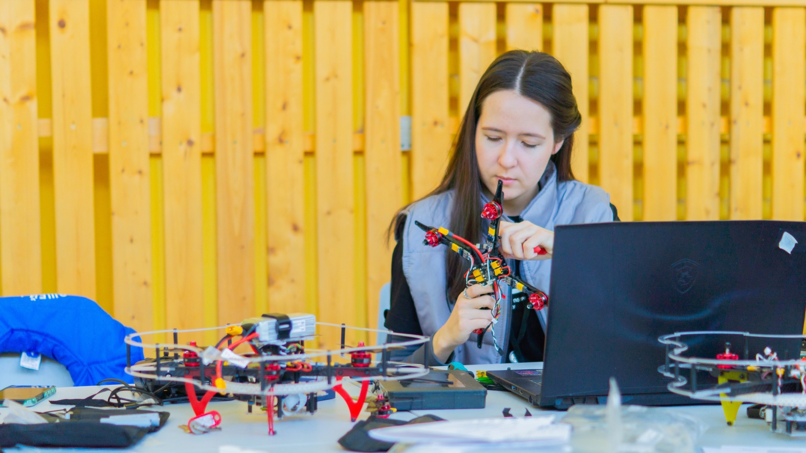
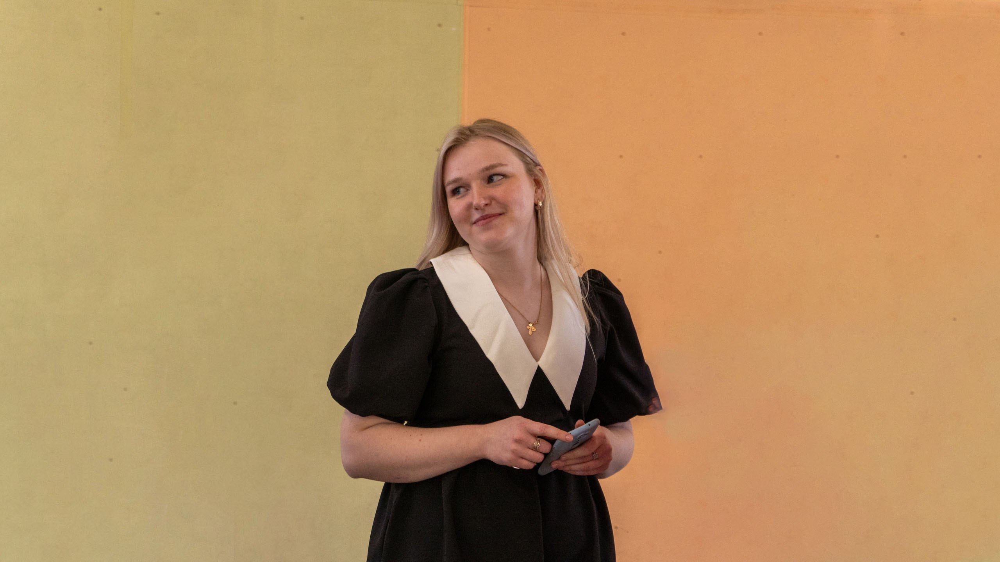
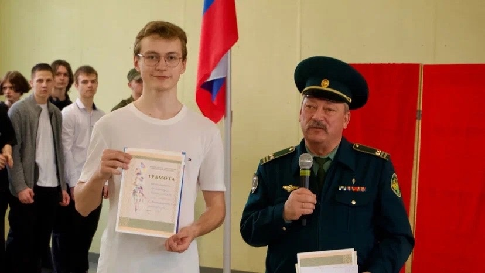

Привет, первокурсник! Этот справочник поможет тебе быстро освоиться в Вологодском колледже связи. Вперёд к знаниям!



Педагогический состав
В нашем колледже представлен огромный педагогический состав состоящий из прекрасных преподователей
В данном списке представлены основные педагоги первого курса
Баранова Ольга Владимировна - История, Обществознание; Бобылев Александр Юрьевич - История, Обществознание;
Гогова Юлия Олеговна - Информатика;
Казаков Михаил Леонидович - Основы безопасности жизнедеятельности, Безопасность жизнедеятельности;
Кисова Любовь Ивановна - Математика, Основы математической логики, Информатика;
Межакова Елизавета Витальевна - Иностранный язык, Иностранный язык (профессиональный);
Мясникова Виктория Александровна - Физическая культура;
Субботина Анна Валентиновна - Иностранный язык;
Юдичева Наталья Анатольевна - Химия, Биология, ОБЖ;
Фролова Тамара Эдуардовна - Русский язык, Литература;
Информация о первом корпусе
Наше учебное заведение представляет собой 2 учебных корпуса,
На карте справа вы можете увидеть место положение первого корпуса
Краткая справка о первом корпусе:Здание является основным учебным корпусом колледжа с 1972 года. Изначально здесь находилось профессиональное училище № 30, которое позже было реорганизовано в колледж.
В корпусе оборудованы 34 учебных кабинета, включая 3 специализированных для IT-дисциплин, 9 мастерских и 3 лаборатории для практических занятий.
В первом корпусе ведётся подготовка по направлениям, связанным с IT, связью и радиоэлектроникой. Среди специальностей — как исторические («Монтажник связи»), так и современные («Программирование», «Сетевое администрирование»).
Рядом с корпусом расположено общежитие для иногородних студентов (ул. Первомайская, д. 40) на 144 места. В нём есть библиотека, медпункт и зоны отдыха. На территории корпуса также находятся столовая, тренажёрный зал и молодежные центры.
Первый корпус остаётся ключевой площадкой колледжа, сочетая традиции технического образования с современными цифровыми технологиями.
Информация о втором корпусе
Продолжая информацию о корпусах на карте слева представлено местонахождение второго корпуса
Краткая справка о втором корпусе:Второй корпус Вологодского колледжа связи и информационных технологий (АПОУ ВО «ВКСиИТ») расположен по адресу: г. Вологда, Советский проспект, д. 137.
Корпус был открыт в августе 2017 года и используется для изучения общеобразовательных дисциплин.
Здесь проводятся экологические и молодежные мероприятия, включая волонтерские акции в рамках проекта «Чистые игры».
В здании оборудованы учебные аудитории для теоретических занятий, а на территории организуются временные площадки для квестов и субботников.
Студенты и преподаватели активно участвуют в городских экологических проектах, таких как уборка парка «Евковка».
В отличие от первого корпуса на Первомайской, где сосредоточены специализированные лаборатории, второй корпус ориентирован на общеобразовательную подготовку и внеучебную деятельность.
Полезные ссылки
Официальный сайт – там публикуется самое точное и обновлённое расписание.Группа ВКонтакте – следите за новостями и оперативными изменениями.
Электронный дневник – удобный способ проверить свои оценки.
Телеграм-бот – быстрое получение расписания в пару кликов.
5. Дополнительные возможности
Актуальные кружки и секции
Футбол
Баскетбол
Волейбол
Фитнес-интенсив
Волонтёрский отряд «Новый Формат»
Клуб «Амбассадоры Профессионалитета»
МОЛОДЁЖНЫЙ ЦЕНТР. Актив
Команда КВН «На связи 2.0»
Молодежный медиацентр «До связи»
Экоклуб «ЭКОбригада»
Танцевальный коллектив «АСпект»
Вокальная студия
Клуб «Вдохновение»
Курс молодого бойца
Радиокружок
Спортивный студенческий клуб «Красные волки»
Актив музея связи
Актив первичного отделения Первых